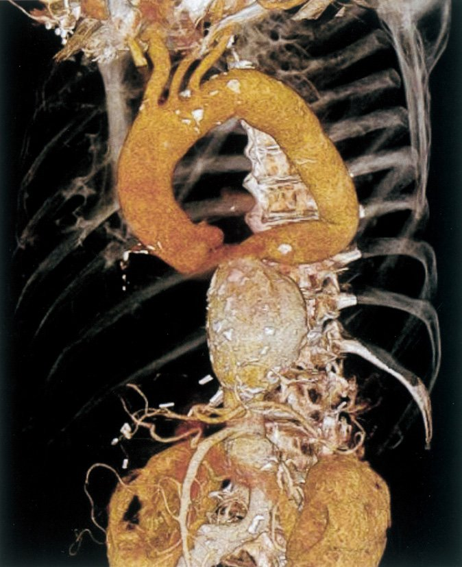
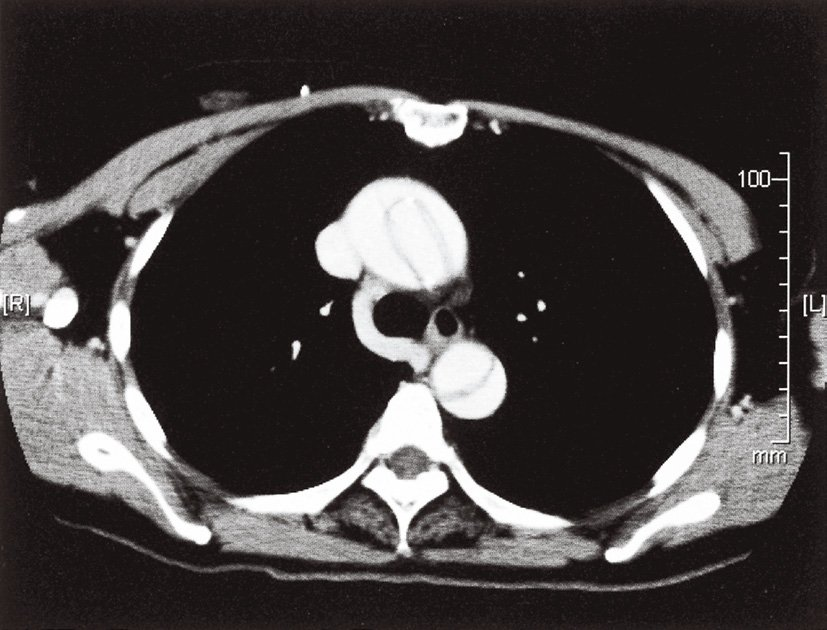
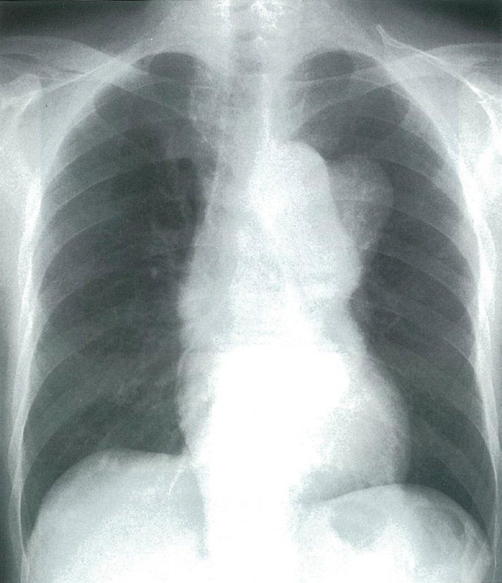
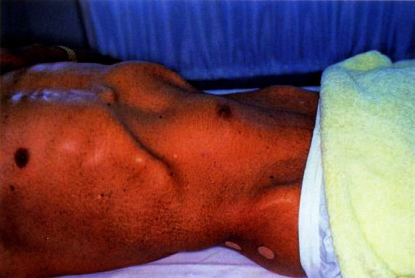
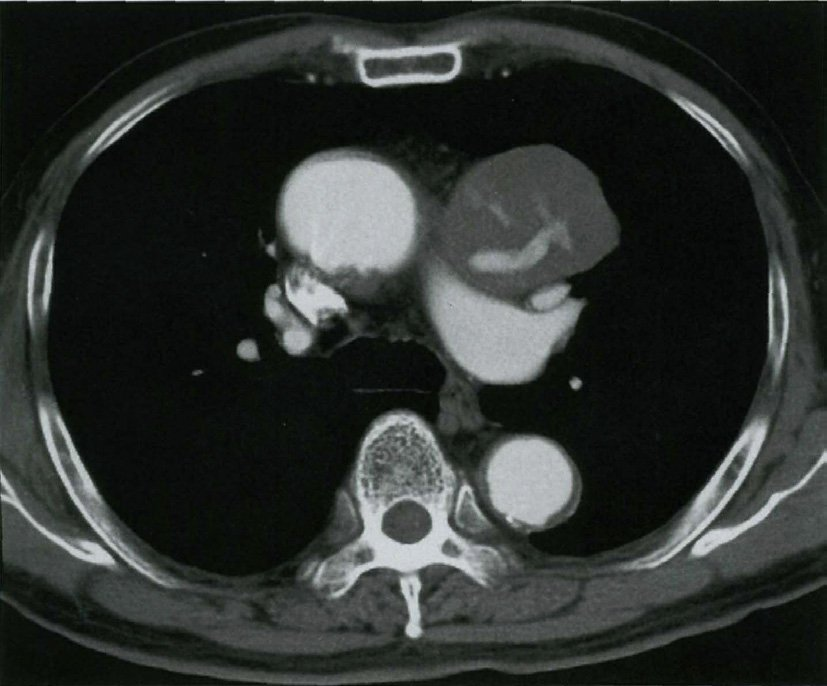
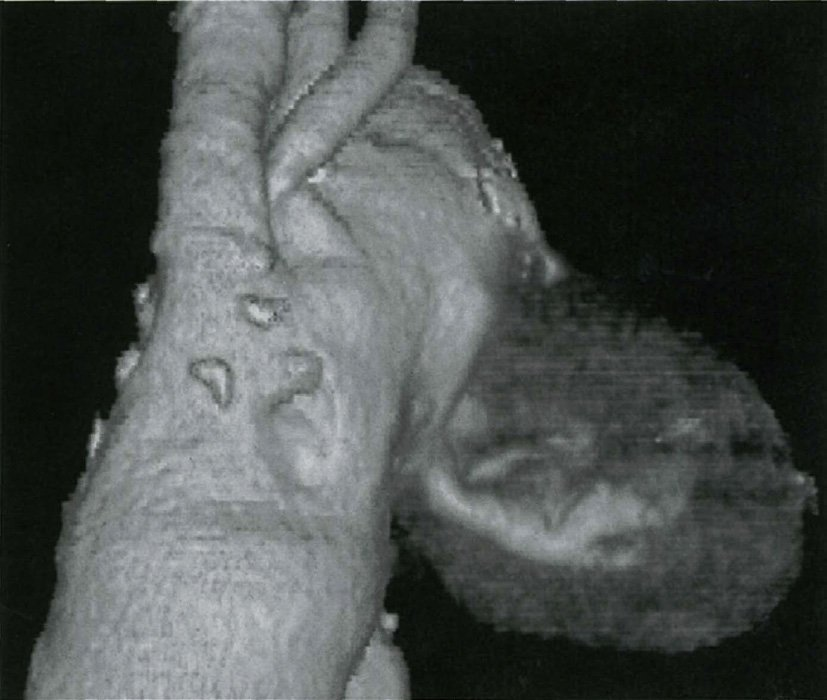

| 種類 | 特徴 | 治療 |
|---|---|---|
| AAA（腹部） | 高齢男性・動脈硬化 | 5.5cm以上→手術・EVAR |
| TAA（胸部） | 高血圧・マルファン症候群 | 5.5〜6cm以上→手術 |
| マルファン症候群 | 大動脈基部・上行大動脈 | 5cm以上→手術 |
| 破裂時の三徴 | 背部痛・低血圧・拍動性腫瘤（Quincke三徴） | 緊急手術 |
| Stanford A | Stanford B | |
| 裂開部位 | 上行大動脈を含む | 下行大動脈のみ |
| 治療 | 緊急手術（保存療法死亡率高い） | 降圧療法（合併症時は手術） |
| 死亡率（未治療） | 約50%/48時間 | 約10%/48時間 |
| 合併症 | 心タンポナーデ・AI・AV blockなど | 下肢虚血・腎虚血 |
| 合併症 | 機序 |
|---|---|
| 心タンポナーデ | 解離血液が心嚢腔に流出→血圧↓・頸静脈怒張・心音減弱 |
| 大動脈弁閉鎖不全（AI） | A型：弁輪拡大・弁支持組織破壊→拡張期雑音（胸骨左縁） |
| AV block・AMI | RCA分枝部への解離→下壁梗塞・AVblock |
| 脳梗塞・片麻痺・視野障害 | 頸動脈・腕頭動脈への解離（Barré徴候陽性） |
| 下肢虚血（後脛骨動脈触知不良） | 腸骨動脈への解離→閉塞・下肢疼痛・脈消失 |
| 腎不全 | 腎動脈への解離→乏尿 |
| 全収縮期雑音（MR） | 大動脈解離の直接合併症ではない |
| 状況 | 対応 |
|---|---|
| 胸背部痛+血圧差 | 左右上肢血圧差>20mmHg→解離を疑う |
| 心タンポナーデ疑い | 心エコー（最初の検査）→心嚢液確認 |
| 安定している場合 | 胸腹部造影CT（確定診断） |
| Stanford A確定 | 緊急手術（外科コンサルト） |

| 疾患 | 特徴 |
| 大動脈解離 | 突然発症・引き裂かれる痛み・移動する痛み・左右血圧差 |
| 腰椎椎間板ヘルニア | 徐々に発症・前屈で悪化・下肢放散痛・SLRテスト陽性 |
| 腎盂腎炎 | 発熱先行・CVA叩打痛・膿尿 |
| 尿路結石 | 突然の疝痛・側腹部〜鼠径部放散 |
| 筋筋膜性腰痛 | 動作時・圧迫で軽減・呼吸で変動なし |
| 胸膜炎 | 呼吸性に変動する胸痛 |
| 所見 | 意義 |
|---|---|
| 所見 | 意義 |
| クモ状指趾・若年・家族歴 | マルファン症候群 |
| 拡張期雑音（胸骨左縁第3肋間） | 大動脈弁閉鎖不全（AI）→上行大動脈関与 |
| 脈圧拡大（104/36→PP68） | AI：拡張期圧低下 |
| 上行大動脈関与 | Stanford A型（下行のみ→B型、だが今回はAI合併でA型） |
| AI合併大動脈解離 | 大動脈弁置換術+人工血管置換術適応 |
| 合併症 | 機序 | 合併の可能性 |
| 喀血 | 左胸腔・気管支への解離血液流出 | ○あり |
| 腸管壊死 | SMA・腸管動脈への解離 | ○あり |
| 急性腎不全 | 腎動脈への解離→虚血 | ○あり |
| 下肢急性虚血 | 腸骨動脈への解離→閉塞 | ○あり |
| 大動脈弁閉鎖不全（AI） | B型では上行大動脈非関与→AI合併しにくい | ×考えにくい |
| 疾患 | 典型的な発見経緯 |
| 腹部大動脈瘤（AAA） | 無症状で偶然発見（腹部エコー・CT）が多い |
| 大動脈解離 | 突然の激烈な胸背部痛→救急受診 |
| 感染性心内膜炎 | 発熱・心雑音・塞栓症状で受診 |
| 冠攣縮性狭心症 | 安静時胸痛（深夜〜早朝）で受診 |
| たこつぼ心筋症 | 強いストレス後の胸痛・ST上昇で受診 |
| 原因 | 特徴 |
| 動脈硬化（最多） | 高齢男性・高血圧・喫煙→中膜変性 |
| マルファン症候群 | FBN1変異→中膜囊胞状壊死→大動脈基部・上行 |
| 梅毒（三期） | 大動脈炎→上行大動脈瘤・AI合併（現在は稀） |
| 高安動脈炎 | 若年女性・大動脈炎→大動脈瘤・狭窄 |
| 巨細胞性動脈炎 | 高齢者・側頭動脈炎→大動脈瘤も |
| Buerger病 | 末梢閉塞性疾患→大動脈瘤の原因にならない |
| 疾患 | 特徴的所見 | 可能性 |
| 急性大動脈解離 | 胸背部痛・左右血圧差・移動する痛み | ○高い |
| 心タンポナーデ | Beck三徴（低血圧・頸静脈怒張・心音減弱） | ○高い |
| 急性冠症候群 | 胸痛・ST変化・トロポニン上昇 | ○高い |
| 脳梗塞（大血管源性） | 解離による頸動脈閉塞→片麻痺 | ○高い |
| 肺血栓塞栓症 | 呼吸困難・低酸素・D-dimer↑→心音減弱は非典型 | △低い |
| 検査 | 役割 | 第一選択か |
| 胸部造影CT | 解離範囲確定・Stanford分類・分枝確認 | 第一選択 |
| 心エコー（TTE） | タンポナーデ・AI評価（ベッドサイド可） | 補助的 |
| MRI | 詳細な評価だが時間がかかる | 急性期不向き |
| D-dimer | 陰性なら解離を否定できる | スクリーニング |
| トロポニン | ACS除外（解離でも上昇することあり） | 鑑別補助 |
| 項目 | 内容 |
|---|---|
| Quincke三徴 | ①腰背部痛②低血圧③拍動性腹部腫瘤 |
| 診断 | 腹部CT（安定時）→緊急手術（不安定時はCTなしで直接手術も） |
| 治療 | 開腹人工血管置換術orEVAR |
| 予後 | 破裂時死亡率50〜80%（緊急手術でも高い） |
| 選択肢 | 意義 | 心大血管疾患を示唆 |
| 持続性の動悸 | 心房細動→左房血栓→心原性脳塞栓症 | ○ |
| 全身の筋肉痛 | 炎症性疾患・多発筋炎→脳血管疾患ではない | × |
| 食事による症状の改善 | 低血糖症状→TIAではない | × |
| 数週間かけての緩徐な症状 | 腫瘍・慢性硬膜下血腫を示唆 | × |
| 突然の激烈な胸背部頸部痛 | 大動脈解離→頸動脈・椎骨動脈への解離→脳梗塞 | ○ |
| 胸痛の特徴 | 疾患 | 正誤 |
| 頸部へ放散する痛み | 狭心症 | ○正しい |
| 針で刺したような痛み | 肋間神経痛 | ○正しい |
| 呼吸性に変動する痛み | 胸膜炎 | ○正しい |
| 徐々に増強する胸背部の痛み | 大動脈解離 | ×誤り（突然発症が正しい） |
| 食後の仰臥位で増強する痛み | 逆流性食道炎 | ○正しい |
| 合併症 | 機序 | 可能性 |
| 血胸 | 解離血液が左胸腔へ流出 | ○あり |
| 腎不全 | 腎動脈への解離→虚血 | ○あり |
| 下肢虚血 | 腸骨動脈への解離 | ○あり |
| 腸管壊死 | SMA・腸管動脈への解離 | ○あり |
| 急性心筋梗塞 | 冠動脈は上行大動脈から分枝→B型では関与しない | ×最も低い |
| 合併症 | 機序 | 原因となるか |
| 脳梗塞 | 頸動脈・腕頭動脈への解離 | ○ |
| 緊張性気胸 | 肺・気管支の穿孔→肺由来 | ×（大動脈解離とは無関係） |
| 急性冠症候群 | RCA・LCA口への解離→虚血 | ○ |
| 心タンポナーデ | 解離血液が心嚢腔へ流出 | ○ |
| 大動脈弁閉鎖不全 | 弁輪拡大・弁支持組織破壊 | ○ |

| 所見 | 機序 | 認められるか |
| 対麻痺 | 脊髄動脈（Adamkiewicz）への解離→脊髄虚血 | ○あり |
| 意識消失 | 脳動脈への解離・心タンポナーデ→ショック | ○あり |
| 尿量減少 | 腎動脈への解離→腎虚血・腎不全 | ○あり |
| Raynaud現象 | 末梢血管攣縮→寒冷・ストレスが誘因（解離とは無関係） | ×認められない |
| 上肢血圧の左右差 | 腕頭動脈・鎖骨下動脈への解離 | ○あり |
| 所見 | 意義 | 改善を示唆 |
| 意識レベルJCSⅡ-10 | 意識悪化（元はⅠ-1） | ×悪化 |
| 呼吸数32/分 | 頻呼吸増悪（元は24） | ×悪化 |
| 脈拍44/分 | 徐脈（元は116）→過剰輸液または迷走神経 | ×注意 |
| 血圧74/60mmHg | 低下継続（元76/58と変わらず） | ×不変 |
| 尿量120ml/時 | 腎灌流回復→循環改善（正常>0.5ml/kg/時） | ○改善 |

| 合併症 | 機序 | 合併の可能性 |
| 嗄声 | 左反回神経圧迫（Ortner症候群） | ○あり |
| 喀血 | 気管・気管支・食道への穿破 | ○あり |
| 突然死 | 破裂→大量出血 | ○あり |
| 嚥下困難 | 食道への圧迫・穿破 | ○あり |
| 口角下垂（顔面神経麻痺） | 顔面神経は側頭骨経由→大動脈瘤と無関係 | ×考えにくい |
| 開腹人工血管置換術 | EVAR（ステントグラフト） | |
| 侵襲性 | 大 | 小 |
| 適応 | 形態問わず | 血管解剖条件あり（neck長など） |
| 術後管理 | ICU・長期入院 | 比較的短期 |
| 長期成績 | 確立 | 再介入リスクあり（endoleak） |
| 緊急時 | 破裂時にも対応可 | 選択的に使用可 |
| 処置 | 適切/不適切 | 理由 |
| 酸素投与 | ○適切 | SpO2 92%→低酸素血症の改善 |
| 緊急手術 | ○適切 | A型→第一選択 |
| 鎮痛薬投与 | ○適切 | 疼痛コントロール（モルヒネ等） |
| 降圧薬投与 | ○適切 | 手術まで血圧・HR管理 |
| 心囊ドレナージ単独 | ×不適切 | 根本治療にならない・再タンポで死亡 |
| 検査 | 適切/不適切 | 理由 |
| 心電図 | ○適切 | AMIとの鑑別・解離によるAMI合併確認 |
| 心エコー | ○適切 | AI・タンポナーデ・壁運動の確認 |
| 胸腹部造影CT | ○適切（第一選択） | 解離確定・Stanford分類 |
| 胸部エックス線 | ○適切 | 縦隔拡大・大動脈拡大の確認 |
| 心筋シンチグラフィ | ×不適切 | 時間がかかる・緊急診断に不向き |
| 薬剤 | 判定 | 理由 |
| プロプラノロール（β遮断薬） | ○正解 | HR↓・bp↓・dp/dt↓→解離拡大防止 |
| ヘパリン | ×禁忌 | 抗凝固→偽腔出血拡大 |
| アトロピン | ×不適 | 心拍数↑→血圧・剪断力↑ |
| フロセミド | ×不適 | 利尿→有効循環血漿量↓→ショック悪化 |
| プレドニゾロン | ×不適 | 免疫抑制薬→大動脈解離には不要 |



| 合併症 | 機序 | 起こりうるか |
| 嗄声 | 左反回神経圧迫（Ortner症候群） | ○正解 |
| 咽頭痛 | 胸部病変→咽頭痛は通常起こらない | × |
| 嚥下痛 | 食道への圧迫→嚥下困難はあるが嚥下痛は非典型 | × |
| 左上肢麻痺 | 胸部大動脈瘤単独では神経障害は通常なし（解離なら別） | × |
| 出血性ショック | 瘤破裂→大量出血→出血性ショック | ○正解 |
| 層 | 成分 | 厚さ（動脈） |
| 内膜（tunica intima） | 単層内皮細胞+内弾性板 | 薄い |
| 中膜（tunica media） | 平滑筋細胞+弾性線維（最厚） | 最も厚い（動脈） |
| 外膜（tunica adventitia） | 結合組織（コラーゲン・線維芽細胞） | 薄い |
| 選択肢 | 正誤 |
| 動脈壁は4層からなる | ×誤り（3層：内膜・中膜・外膜） |
| 動脈では外膜が最も厚い層 | ×誤り（中膜が最も厚い） |
| 外膜は平滑筋細胞からなる | ×誤り（外膜は結合組織・線維芽細胞） |
| 中膜と外膜は内弾性板で区切られる | ×誤り（内弾性板は内膜と中膜の境界・外弾性板が中外膜境界） |
| 血管壁内腔側は単層の内皮細胞 | ○正しい |